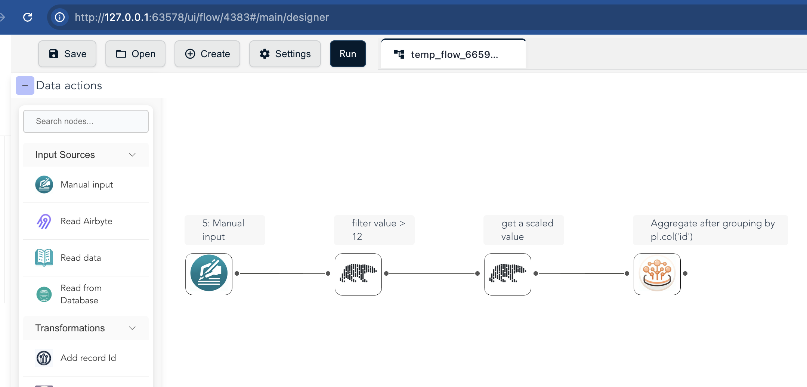
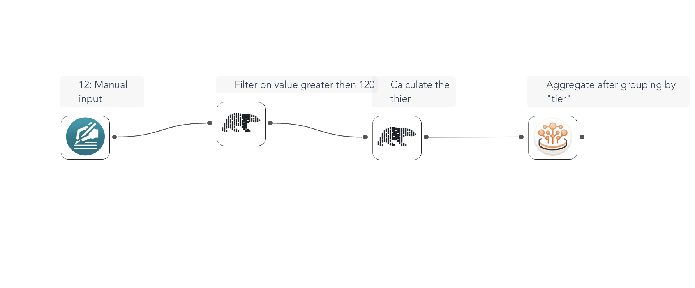

Building Flows with Code
The flowfile_frame API lets you define and run data transformation pipelines in Python — with a Polars-like surface — while building a visual ETL graph as a side effect. This tutorial walks through a simple pipeline and a more involved one, and opens each in the Designer.
Overview
flowfile_frame gives you a Polars-like API that generates an ETL graph from your Python code, which you can visualize, save, and share in the Flowfile Designer. Execution runs on the Polars engine.
Installation
The flowfile_frame module ships with the standard flowfile package.
pip install flowfile
A first pipeline
Build a pipeline programmatically and collect the result (this code runs in the test suite on every commit):
import flowfile as ff
from flowfile import col
df = ff.from_dict({
"id": [1, 2, 2],
"value": [10, 20, 15]
})
result = (
df.filter(col("value") > 12, description="filter value > 12")
.with_columns((col("value") * 10).alias("scaled_value"), description="get a scaled value")
.group_by(col("id"))
.agg(
col("value").sum().alias("sum_value"),
col("value").max().alias("max_value"),
col("value").min().alias("min_value"),
)
)
frame = result.collect() # a Polars DataFrame
Then open the graph in the Designer:
ff.open_graph_in_editor(result.flow_graph)
Generated flow in the Flowfile UI

A more involved pipeline
You can add conditional logic, grouping, and aggregation, then visualize the result the same way:
df = ff.from_dict({
"id": [1, 2, 3, 4, 5],
"category": ["A", "B", "A", "C", "B"],
"value": [100, 200, 150, 300, 250]
})
aggregated = (
df.filter(ff.col("value") > 120, description="Filter on value greater than 120")
.with_columns(
[
(ff.col("value") * 1.1).alias("adjusted_value"),
ff.when(ff.col("category") == "A").then(ff.lit("Premium"))
.when(ff.col("category") == "B").then(ff.lit("Standard"))
.otherwise(ff.lit("Basic")).alias("tier"),
],
description="Calculate their tier",
)
.group_by("tier")
.agg(
ff.col("adjusted_value").sum().alias("total_value"),
ff.col("id").count().alias("count"),
)
)
ff.open_graph_in_editor(aggregated.flow_graph)
Generated flow in the Flowfile UI

When you call open_graph_in_editor(...), the Designer opens and displays your pipeline, where you can inspect each node, continue editing visually, or save and export it.
Grouping by an expression
group_by(col("id")) groups by an expression, which renders as a polars_code node rather than an editable group_by node. Grouping by a column name (group_by("id")) produces the editable node.
Related
- FlowFrame and FlowGraph — the model behind these graphs
- Visual UI Integration — launching and controlling the Designer from Python
- API Reference — the full method set